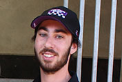

Training at Flemington
On a typical day, a thoroughbred’s training at Flemington starts at 3.30 am. Find out about the role of the Strapper and the Trackrider, then have a go at setting up a training day for a thoroughbred horse.
Strapper

"“In the morning we come in, muck out their boxes, saddle them up for trackwork and take them out for the riders." - Ziggy LaityWhat's my role?
My job is to look after the horses on the grounds, take them to the races and take care of them.
Trackrider
“The aim is to have the horse relaxed and happy in his work.” - Raquel BennettWhat's my role?
I focus on getting the horses worked and getting them fit, educated for raceday.
Tap the active icons
Once you have clicked on each role and watched the video, the activity will be available.